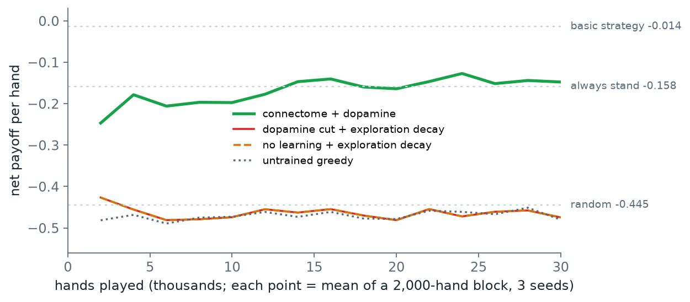

1結論：五個步驟的成績
判定標準的三種分法見 PART 3 第 1 節。fly-blackjack 的每個實驗都固定了亂數種子，所以本課事先訂的標準是：作者附的結果要逐位相同；需要重新訓練的步驟（CEM 訓練，見 PART 1 第 6 節）不要求數字一樣，只要求「形狀相同」——學習組明顯好過對照組。
| 步驟 | 做什麼 | 判定標準 | 結果 |
|---|---|---|---|
| BJ1 | Dino：訓練讀出並跑 50 個保留關卡 | 訓練組明顯高於三個對照 | 四列數字與 README 逐位相同 |
| BJ2 | 下載資料、切出蕈狀體，跑兩次 | 細胞數、連結數與 README 相同；兩次 md5 相同 | 細胞數相同、md5 相同；README 寫的兩個連結數與作者 repo 裡的檔案不一致（文件錯誤，不影響結果） |
| BJ3 | 制約學習與 T-maze | 與 README 的表相同 | 學習指數相同；三個對照組的 T-maze 位移本機 +0.03、README +0.00 |
| BJ4 | 覓食 | 作者的策略：逐位相同；重新訓練：形狀相同 | 作者的策略逐位相同；照 README 重新訓練形狀不同；改用作者策略檔記錄的參數重新訓練，逐位相同（已找到原因） |
| BJ5 | 21 點 30,000 手 | 勝率約 −16%、與基本策略一致約 52% | 勝率對上（−14.8%）；一致率對不上（45.3%），作者的三份資料彼此也不一致 |
每一列的數字出處見下面對應的小節。
BJ1–BJ5 是本課自己編的代號。作者的 repo 用的是 python -m flybrain.… 指令，其中覓食與 21 點兩個實驗沒有命令列入口，下載包的 blackjack/scripts/ 補了兩支小程式去呼叫作者的函式（不改作者的程式）。
2BJ1 Dino：四列全部相同
| 控制方式 | 完成關卡（50 關） | 平均存活秒數 | 平均分數 |
|---|---|---|---|
| 連線體 ＋ 訓練過的讀出 | 45 | 29.12 | 210.7 |
| 同一個讀出，迴路輸出換成 0 | 0 | 3.48 | 18.7 |
| 沒訓練的讀出 | 0 | 2.26 | 11.8 |
| 隨機按鍵 | 0 | 2.43 | 12.7 |
本機與 README 第 42–47 行逐位相同。本機輸出在 out/blackjack/logs/bj1_train.log。
第二列是作者在 README 特別強調的對照：讀出一模一樣，只是把迴路送給它的活動換成 0。這一列完成 0 關，代表讀出確實在用迴路算出來的東西，而不是自己背下了關卡。作者也明說這個示範不能證明果蠅的接線比同樣大小的隨機網路好——要證明那件事，需要用打亂接線的網路以同樣的訓練量再比一次。
3BJ2 切出蕈狀體：md5 相同，README 的兩個連結數對不上
作者的 flybrain.mb.fetch 從 connectome_data_prep 下載 MaleCNS 的預處理矩陣，flybrain.mb.extract 從裡面切出蕈狀體四群神經元。README 宣稱切法在任何電腦上都逐位相同，所以本課跑兩次、比對輸出檔 data/mb_circuit.npz 的 md5：
32dc49359f237250162ed33dcb5da93c data/mb_circuit.npz
32dc49359f237250162ed33dcb5da93c data/mb_circuit.npz兩次相同。輸出在 out/blackjack/logs/bj2_md5.txt。
| 項目 | README | 作者 repo 裡的 data/mb_manifest.json | 本機 |
|---|---|---|---|
| 細胞數 PN／KC／MBON／DAN | 682／1,200／97／332 | 682／1,200／97／332 | 682／1,200／97／332 |
| PN→KC 連結 | 22,586 | 7,182 | 7,182 |
| KC→MBON 連結 | 61,210 | 18,183 | 18,183 |
| DAN→MBON 連結 | 3,123 | 3,123 | 3,123 |
| MBON 趨近／迴避 | 56／41 | 56／41 | 56／41 |
作者的 manifest 收在 out/upstream/blackjack_mb_manifest_committed.json，本機的在 out/blackjack/logs/bj2_extract_run1.log。
本機與作者 commit 進 repo 的 manifest 完全相同，只有 README 的兩個數字不一樣。用全部 3,811 顆 KC 切出的電路（PART 5 的加做檢查存下的）有 22,581 條 PN→KC、57,823 條 KC→MBON：前者接近 README，後者也不相等。README 那兩個數字是怎麼來的，從程式裡對不出來。它們不影響任何實驗結果——實驗讀的是 mb_circuit.npz，而那個檔案逐位相同。
4BJ3 制約學習：學習指數相同
學習指數與 T-maze 偏好指數的定義見 PART 1 第 6 節。12 個種子、每個 20 次訓練：
| 條件 | 學習指數（README） | 本機 | T-maze 位移（README） | 本機 |
|---|---|---|---|---|
| 連線體 ＋ 可塑性 | −1.30 | −1.301 | +0.80 | +0.800 |
| 關掉可塑性 | 0.00 | 0.000 | +0.00 | +0.030 |
| 切斷多巴胺 | 0.00 | 0.000 | +0.00 | +0.030 |
| 氣味與電擊不同時出現 | 0.00 | 0.000 | +0.00 | +0.030 |
| KC→MBON 打亂 | −1.23 | −1.232 | +0.83 | +0.825 |
本機輸出在 out/blackjack/logs/bj3_experiment.log、bj3_tmaze.log。
T-maze 的位移是訓練後的偏好指數減掉訓練前的。三個對照組的學習指數是 0（模型完全沒變），但本機的 T-maze 位移是 +0.03 而不是 README 的 +0.00。原因在 T-maze 的做法：每次讓 100 隻模擬果蠅依機率選邊，訓練前、訓練後各抽一次，兩次抽到的隨機數不同，所以模型沒變、位移也不會剛好是 0。本機的 +0.03 是作者的程式照原樣跑出來的；README 的 +0.00 怎麼得到，程式裡查不到。訓練前的偏好指數本機 +0.147、README +0.15，訓練後 +0.947、README +0.95，兩者相同。
5BJ4 覓食：README 少寫了一個參數
覓食實驗分兩段：控制移動的讀出先用 CEM 訓練好（作者把訓練好的參數存在 policies/forage.json），再讓果蠅在場地裡跑 90 秒、40 個種子，算平均被電擊幾次。三個條件：學習、切斷多巴胺、關掉可塑性。

scripts/make_figures.py 從 out/blackjack/bj4_forage.json 與 bj4b_forage_s45_eval.json 畫出。B 組的問題不只是數字不同：學習組 1.93、切斷多巴胺 1.88，學習沒有帶來任何好處，形狀就不對了。再看食物：B 組每 90 秒只吃到約 1.3 次（作者約 5.5 次），也就是這個策略幾乎不去找氣味源，蕈狀體學到什麼都派不上用場。
原因寫在作者自己的策略檔裡。policies/forage.json 除了訓練好的參數，還記錄了訓練時的設定：
{
"task": "forage",
"seed": 20260913,
"seconds": 45.0,
"validation": 2942.240450387357
}策略檔裡除了參數本身以外的欄位，收在 out/upstream/blackjack_forage_policy_meta.json。
訓練時每一回合是 45 秒；而 README 的指令 train(generations=32) 沒有指定這個參數，會用程式裡的預設值 40 秒。把指令改成 train(generations=32, seconds=45.0) 重新訓練：訓練的驗證分數是 2942.24，和策略檔記錄的值一樣；三個條件的電擊與食物數也都與作者逐位相同（C 組）。
seconds=45.0。下載包的 blackjack/scripts/bj4b_forage_s45.py 補上這個參數，重新訓練的結果與作者附的策略逐位相同。bj4_forage.py 保留照 README 原樣的訓練，作為對照。6BJ5 21 點：勝率對上，學到的策略對不上
作者在 flybrain/mb/blackjack.py 的檔尾用註解寫了實驗設定：3 個種子、每個 30,000 手、對照組先跑。勝率在這裡指平均每手的淨輸贏（以一注為單位，−0.15 就是平均每手輸 0.15 注），取最後 2,000 手。

scripts/make_figures.py 從 out/blackjack/bj5_blackjack_30000.json 畫出。| 條件 | 作者的勝率 | 本機（3 種子） | 平均 |
|---|---|---|---|
| 未訓練 | −45% | −0.448／−0.469／−0.523 | −0.480 |
| 關掉學習（探索照常遞減） | −45% → −45% | −0.439／−0.470／−0.515 | −0.475 |
| 切斷多巴胺（探索照常遞減） | −46% → −47% | −0.439／−0.470／−0.515 | −0.475 |
| 連線體 ＋ 多巴胺 | −45% → −16% | −0.150／−0.164／−0.129 | −0.148 |
作者的值出自 blackjack.py 檔尾註解（收在 out/upstream/blackjack_py_RESULT_comment.txt）；本機在 out/blackjack/bj5_blackjack_30000.json。
勝率的改善重現了，而且只出現在有多巴胺的那一組。但作者還宣稱了「它學到什麼策略」：與基本策略的一致率，以及它在 260 格裡各選了什麼。這一部分，作者自己留下的三份資料就互相矛盾：
| 來源 | 與基本策略一致 | 260 格裡的選擇 |
|---|---|---|
| README | 52% | 幾乎都停牌，只在 10、11 點要牌 |
blackjack.py 檔尾註解 | 48.1% | 停牌約 227 格、加倍 0 格 |
作者附的大腦檔 data/brain_seed.json（檔內記錄） | 53.1% | — |
| 同一個大腦檔，載入作者的 Python 模型重新評分 | 51.9% | 要牌 97、停牌 149、加倍 14 |
| 本機重跑（種子 0） | 43.8% | 要牌 6、停牌 214、加倍 40 |
大腦檔的評分由 blackjack/scripts/bj5b_author_brain.py 算出（out/blackjack/bj5b_author_brain.json）；本機三個種子的平均一致率是 45.3%。
作者附的大腦一致率約 52%，和 README 相符，但它要牌 97 格，不是註解說的「幾乎全部停牌」；同一份程式、同一個種子在本機重跑，又是第三種結果。所以這一步的結論要分開講：「有多巴胺才會變好」可以重現；「學到什麼策略、一致率多少」從公開的程式碼重現不出來。最直接的解釋是附的大腦檔由另一個版本或另一組設定的程式產生，但作者沒有記錄，本課無法確認。